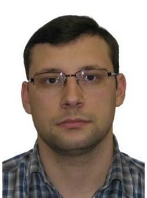

Контакты
- +79277667983
- г.Самара
-
 mkalikin@mail.ru
mkalikin@mail.ru
Ссылки
Михаил Каликин
6232-020402D - Фундаментальная информатика и информационные технологии
Я стараюсь постоянно развиваться в сфере информационных технологий, участвуя в образовательных программах, курсах и мероприятиях, связанных с моей специальностью. Я всегда открыт к новым знаниям и возможностям для роста как специалиста в области информатики и программирования. С нетерпением жду возможности сотрудничества и обмена опытом с единомышленниками и профессионалами в мире IT.
Опыт работы
DevOps
Более 6 лет технического опыта, знаний и практического опыта в работе с Linux, K8S, Monitoring, CI\CD.
Образование
Самарский национальный исследовательский университет имени академика С.П. Королева, Самара Информатики
Программное обеспечение для информационных систем
Курсы и сетификаты
Google courses
Microservice Applications in Kubernetes (legacy) - 2020
Цели
Развитие в сфере ИТ, Linux, DevOps